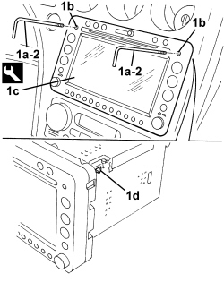
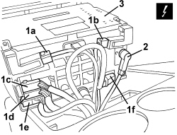

5580P12 CONNECT PANEL - R.R.
- Path
- Procedures > 55 ELECTRICAL EQUIPMENT > 5580 SPECIAL ACCESSORIES > 5580P CONNECT PANEL > 5580P12 CONNECT PANEL - R.R.
- Kind
- repair procedure (removal / refitting; the operation number is the code)
- Applies to
- all engines; all production periods
- Interactive page
- https://sloeber94.github.io/elrnDB-aBrrSpdr/en/#/946002482
Applies to: all engines; all production periods
 Removing
Removing
 Refitting
Refitting1. Fit the tools (1a) in the housings (1b) in the navigator (1c), thenn tighten them until a click is heard (the release of the inner retainers (1d).
Tool | Description | Function | Validity |
|---|---|---|---|
1871003000 | Extractor | Connect panel extraction |
2. Grip the tools (1a) and extract the navigator.

Applies to: all engines; all production periods
1. Disconnect the electrical connections (1a, 1b, 1c, 1d, 1e, 1f).
Description | Component |
|---|---|
RADIO |
2. Disconnect the aerial connection.
3. Keep the navigator and undo the tools from the housings.

Applies to: all engines; all production periods
Refitting
Removing- Check that the navigator is not damaged.
- Connect the aerial connection.
- Connect the electrical connections.
- Position the wiring carefully securing it to the retainers.
- Place the navigator carefully in position and attach the inner retainers. Take care not to pinch the electrical wires.
- Check that the navigator is working.
Topics linked from this page (1)
Topics that link to this page (12)
- E1050 CAN CONNECTION LINES - WIRING DIAGRAM
- E1050 CAN CONNECTION LINES - COMPONENT LOCATION
- E1050 CAN CONNECTION LINES - WIRING DIAGRAM
- E1050 CAN CONNECTION LINES - COMPONENT LOCATION
- E3510 RADIO - WIRING DIAGRAM
- E3510 RADIO - COMPONENT LOCATION
- E3510 RADIO - WIRING DIAGRAM
- E3510 RADIO - COMPONENT LOCATION
- E3570 INTEGRATED RADIOPHONE - WIRING DIAGRAM
- E3570 INTEGRATED RADIO PHONE - COMPONENT LOCATION
- E4091 CONNECT - WIRING DIAGRAM
- E4091 CONNECT - COMPONENT LOCATION